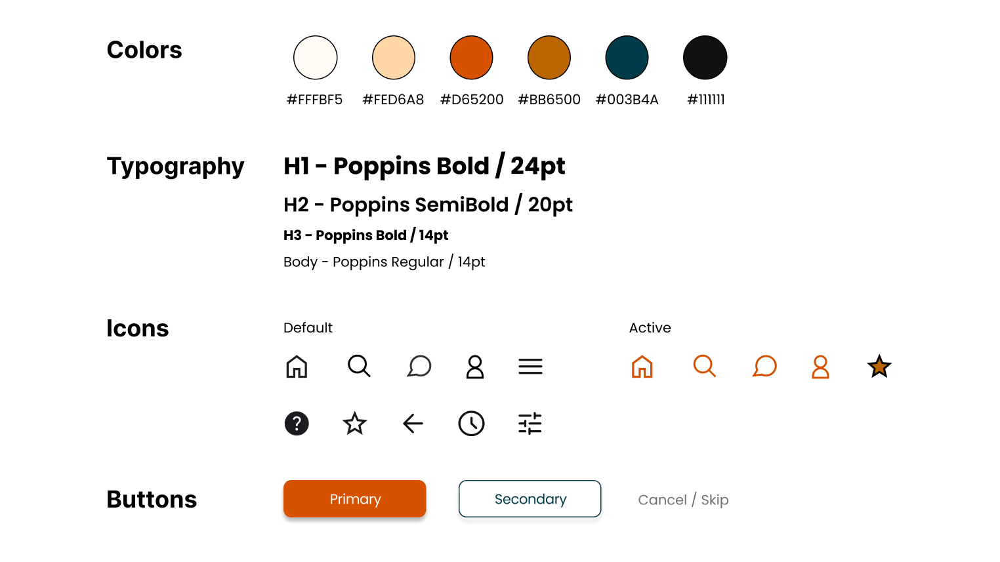

BEAUTIFY
Designing an inclusive and intuitive platform to make beauty accessible for everyone.
Time frame: January - May 2022
Role: UI/UX Designer
Tools: Miro, Figma, Notion
Mentors: François Violette, Marie Girard
Team: Cindy Long, Adeline Poumaroux, Ines Tabti-Benhari, Diane Volpelière

Introduction
From your physical characteristics to your skin type, your beauty is unique: there is none other like yours. But in the mass information age, finding the appropriate products and techniques that will enhance YOUR features keeps growing more challenging – especially in a white, youth and cis female dominated area.
Our mission statement
To help all our users find the right products and techniques through an intuitive and inclusive platform.
üîç
Empathize
What do the users need and want?
User Interviews
For this fictitious university project, and due to time constraints, members of the team were asked to interview only one person each. However, it is worth noting that using a larger user panel would have been necessary for an actual project.
Profiles
| Interviewee 1 | Interviewee 2 | Interviewee 3 | Interviewee 4 | Interviewee 5 | |
|---|---|---|---|---|---|
| Gender | ♀ | ♀ | ♀ | ♂ | ♀ |
| Age | 32 yo | 52 yo | 20 yo | 22 yo | 59 yo |
| Race | Latina | White | Black | White | Asian |
| Profession | Spanish teacher | Nurse | College student | College student | Dressmaker |
| Level | Advanced | Beginner | Intermediate | Intermediate | Beginner |
Questions & Insights
| ü§î Questions | üí° Insights |
|---|---|
| "What is your relationship with makeup?" | |
| "What are the reasons that encourage you to wear makeup / learn how to apply makeup?" | All interviewees mentioned self-confidence as their main reason for wearing makeup. |
| "What criteria do you pay attention to when buying beauty products?" | Interviewees mostly pay attention to: 1/ the ingredients ("how chemical is it and how is my skin going to react to it?"), 2/ the price ("is it within my budget?"), 3/ the brand's ethics ("is it cruelty-free?"), 4/ user-friendliness. |
| "What makeup techniques you haven't mastered yet would you like to learn? What has stopped you so far?" | Interviewees all mentioned different makeup techniques they would like to learn. The techniques they mentioned seem to match their respective level: beginners mentioned basic techniques such as applying lipstick ("which shade should I pick based on my skin color?"), while advanced-level interviewees mentioned more complex techniques such as contouring ("I don't understand my face shape"). |
| "Where do you usually look for makeup inspiration or advice?" | 1/ The main reason mentioned for not learning or mastering those techniques yet is not knowing where to start due to the myriad of beauty content out there. 2/ Younger interviewees like to watch youtube or tiktok videos for makeup inspiration while older interviewees prefer magazine articles. |
| "How well do you generally feel represented in beauty media (based on your skin color, age, etc.?" | Non-white, male and older interviewees feel underrepresented in beauty media, resulting in them being unsure how to apply makeup appropriately in regard to their features. |
Competitive Analysis
| Sephora | Nocibe | Cosmopolitan | kleo beaute | MarionCameleon | |
|---|---|---|---|---|---|
| Type of website | Online retail | Online retail | Magazine website | Blog | Youtube channel |
| Product Sales | ✓ | ✓ | ✗ | ✗ | ✗ |
| News | ✓ | ✗ | ✓ | ✓ | ✗ |
| Tutorials | ✓ | ✓ | ✗ | ✓ | ✓ |
| Comments | ✓ | ✓ | ✗ | ✓ | ✓ |
| Generic Advice | ✓ | ✓ | ✗ | ✓ | ✓ |
| Tailored Advice | ✗ | ✗ | ✗ | ✗ | ✗ |
| Representation | Satisfactory | Satisfactory | Satisfactory | Limited | Limited |
üéØ
Define
Who is the user and what problem do they face?
User Persona

Empathy Map
User Journey Map
"Shopping beauty products":

Problem Statement
User likes to wear makeup to help boost their self-confidence but has trouble learning beauty techniques and choosing the right products in a fast-paced world of marketing and mass information where beauty content is never-ending and diversity is lacking.
üí°
Ideate
How can we help them solve their problem?
Crazy 8
The 6 main ideas we drew from our workshop are the following:
Quiz:
Users can answer a quizz to get tailored suggestions and advice throughout their experience on the app.
Search:
Sections dedicated to Products and Tutorials with filters to better help users find what they are looking for.
Diversity:
Show a diverse panel of models to make sure every user feels represented and has content to relate to.
Community:
Users can interact with people who share their concerns, ask questions, give advice... and feel part of a community.
Cashback:
Users can earn cash back on beauty purchases made on online partner stores through the app.
Familiar Look & Feel:
A look & feel similar to Instagram and Pinterest to make the app easy to pick up for users.
üìê
Prototype
How can we help them solve their problem?
Prototypes


Design System
✅
Test
How can we help them solve their problem?
For the user tests, we reused the same user panel as in Step 1.
| About... | ü§î Questions | üí° Insights |
|---|---|---|
| Onboarding | "Describe the illustrations from the first three screens in 3 adjectives." | Interviewees used the following adjectives: warm, empowering, fun, attractive, strong (women), sweet, confidence. |
| Quizz | "On a scale from 1 to 5, how clear do the questions and answers seem to you?" (1 - Not clear at all / 5 - Very clear) | The average score for this question is 4.8/5 (4 interviewees answered 5/5; 1 interviewee answered 4/5). |
| Quizz | "Do you find the help button helpful?" (Yes - No - I didn't see this button) | All interviewees answered "Yes". |
| General | "Comment anything that comes to your mind as you navigate through the app." | üëç: 1/ It's didactic. 2/ It is intuitive and easy to navigate: all 4 tabs at the bottom all have a distinct usage. 3/ The fonts and colors are very harmonious, legible and easy on the eye. 4/ The tailored suggestions after taking the quizz are a big added value. 5/ The tutorials being similar to cooking recipes (difficulty, time, products used...) and multi-format. 6/ Favoriting items. 7/ The representation and diversity of models. üëé: 1/ Language inconsistencies: mix of French and English ("highlighter"). 2/ Titles are missing on tutorial tiles in gallery view. 3/ Prices are missing on product information sheets. 4/ The difference between "novice" and "d√©butant" is unclear. |
| General | "Do the language and terms used across the app seem appropriate to you?" (1 - Not appropriate at all / 5 - Perfectly appropriate) | The average score for this question is 4.8/5 (4 interviewees answered 5/5; 1 interviewee answered 4/5). |
| General | "What would be some missing features according to you?" | One interviewee mentioned "a search bar in the Community section" as a feature improvement. One interviewee mentioned "short articles" as a nice-to-have. |
| General | "On a scale from 1 to 5, how easy is it to navigate through the app?" (1 - Not intuitive at all; 5 - Very intuitive) | The average score for this question is 5/5 (all interviewees answered 5/5). |
| General | "Any other comment?" | "I appreciate seeing so many different faces and types of skin, and the product pictures make me want to try out all of them!"; "When does the app get released? I need it!"; "It's perfect, I am very impressed." |
Potential improvements in ulterior updates based on user feedbacks:
- Add a search bar in the Community section to allow users to search keywords and find topics and posts of interest more easily.
- Add titles on tutorial tiles in gallery view to guarantee easier identification as well as consistency across the app.
- Add price (or price range) on product information sheet, as budget is an important criterion for our users when purchasing beauty products.